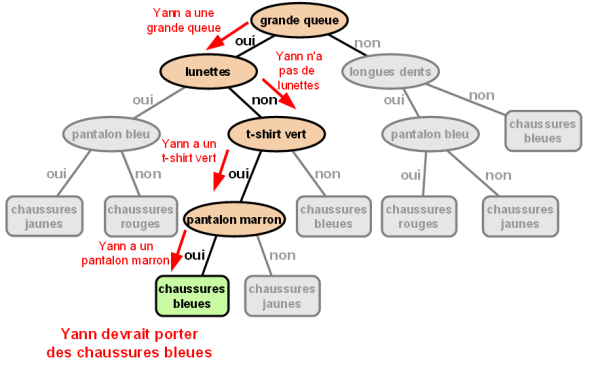

Pour leur grande fête annuelle, les Castors se sont mis d'accord sur un code vestimentaire. Celui-ci établit comment chaque castor doit choisir la couleur de ses chaussures.
Le schéma ci-dessous décrit ce code. Il s'utilise du haut vers le bas. A chaque ovale, si la caractéristique indiquée est vraie on suit la ligne "oui", sinon on suit la ligne "non". On descend jusqu'à arriver sur un rectangle, dans lequel une couleur de chaussures est indiquée.
Par exemple, si le castor a une grande queue (premier ovale), on suit la ligne "oui". On se demande alors s'il a des lunettes (deuxième ovale rencontré), s'il n'en a pas, on suit la ligne "non". On se demande alors s'il a un "T-shirt vert" (troisième ovale rencontré), etc., jusqu'à arriver à un rectangle donnant la couleur des chaussures.
L'un des Castors suivants s'est trompé. Lequel ?

Yann porte des chaussures rouges. Il n'a donc pas respecté le code vestimantaire, qui indique qu'il devrait porter des chaussures bleues. La solution était donc la D : Yann
Les trois autres Castors ont respecté le code vestimentaire :
Le code vestimentaire Castor est présenté sous la forme d'un arbre de décision. L'ovale tout en haut est appelé racine. Deux branches partent chacune vers un autre ovale qui lui même a deux branches et ainsi de suite. Il s'agit d'un arbre à l'envers !
Pourquoi aime-t-on tant ce type d'arbres en informatique ? Entre autres parce qu'ils donnent beaucoup d'informations en un minimum d'étapes. Dans le cas présent, nous arrivons à décider parmi 8 façons de s'habiller (autant que de rectangles) en suivant un chemin dans l'arbre et en ne répondant qu'à 4 questions au maximum. Si vous essayez d'agrandir cet arbre en rajoutant seulement 3 questions de plus avant chaque rectangle, vous obtiendrez un code vestimentaire avec 64 façons de s'habiller pour seulement 7 questions !